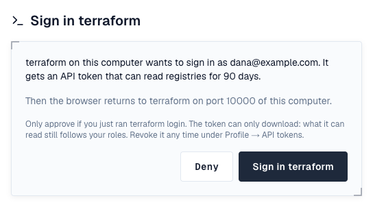

Terraform repositories are registries for terraform init and tofu init. They serve providers and modules through the registry protocols, and providers also through the provider network mirror protocol. Hosted repositories take the providers and modules you publish; proxy repositories cache the Terraform or OpenTofu Registry, or another Depotex; groups combine them.
1. Sign in
Run terraform login with the Depotex address. Terraform opens Depotex in your browser; sign in if you aren't, check that you just ran the command, and choose Sign in terraform. The browser hands the token back to Terraform, which saves it for that address.
terraform login depotex.example.com
- The token is an API token of yours that can only download (it reads what your roles let you read) and lasts 90 days; run terraform login again after that. It shows under Profile → API tokens as terraform login · <date>, where you can revoke it.
- Deny sends Terraform away without a token. If the token can't be created (too many tokens, or your organization's token policy allows shorter expiry), the page says so.
- Terraform listens for the answer on a port from 10000 to 10010 of your computer, so the browser must run on the same computer. On a server without a browser, use a token as below.
- It works with Terraform 0.12.21 and later and with OpenTofu's tofu login (tested with Terraform 1.0 and 1.13, OpenTofu 1.10).
Or give Terraform an API token yourself (for CI, or to publish with it), in ~/.terraformrc (or terraform.rc on Windows) or as an environment variable:
credentials "depotex.example.com" {
token = "<API token>"
}
# or
export TF_TOKEN_depotex_example_com="$DEPOTEX_TOKEN"Terraform reaches registries over HTTPS only, with a certificate it trusts: the Depotex address must use HTTPS.
2. Use providers and modules
Modules: Depotex answers registry discovery at its own address, so module source addresses work without any other configuration. The namespace names the space and repository: <space>__<repository>__<namespace>, or <space>__<namespace> for the space's default Terraform group.
module "net" {
source = "depotex.example.com/my-space__tf__acme/network/aws"
version = "~> 1.0"
}Providers: Terraform and OpenTofu allow no _ in a provider's namespace, so a provider address can't carry the space and repository. Give the repository a host name of its own in ~/.terraformrc, any name you like, whose provider service is the repository's, and use that name in source addresses:
host "my-space-tf.depotex.example.com" {
services = { "providers.v1" = "https://depotex.example.com/repository/my-space/tf/v1/providers/" }
}
credentials "my-space-tf.depotex.example.com" {
token = "<API token>"
}
# main.tf
terraform {
required_providers {
demo = { source = "my-space-tf.depotex.example.com/acme/demo", version = "1.0.0" }
}
}Or install providers through the network mirror, which keeps their usual addresses (acme/demo):
provider_installation {
network_mirror {
url = "https://depotex.example.com/repository/my-space/tf/"
}
}The repository's Usage tab shows these snippets with your address filled in.
3. Publish
Upload with a PUT (Publish permission): one zip per platform for a provider, and a .tar.gz (or zip) for a module.
curl -f -u "me:$DEPOTEX_TOKEN" --upload-file terraform-provider-demo_1.0.0_linux_amd64.zip \
https://depotex.example.com/repository/my-space/tf/providers/acme/demo/1.0.0/terraform-provider-demo_1.0.0_linux_amd64.zip
curl -f -u "me:$DEPOTEX_TOKEN" --upload-file network.tar.gz \
https://depotex.example.com/repository/my-space/tf/modules/acme/network/aws/1.0.0.tar.gz- A provider package must be a zip holding terraform-provider-<type> for that version. An optional terraform-provider-<type>_<version>_manifest.json next to it declares the protocol versions the provider speaks.
- Version lists, download answers and the mirror's files are generated from what was published, and so is each provider version's SHA256SUMS. It's signed with the repository's signing key (the repository's Settings → Signing key, as for APT and YUM), and the key is given to Terraform with each download.
- A version can't be replaced once published: new Terraform repositories publish once. Delete a version with Delete permission to free it.
- Download links in registry answers carry a short-lived ticket (TERRAFORM_LINK_TTL, 10 minutes by default), because Terraform downloads archives without sending its token.
4. Versions and policies
- Each provider version (namespace/type) and module version (namespace/name/system) is a version in Depotex: cleanup policies, quotas, quarantine and the block list apply to it. Versions are compared as SemVer; pre-releases count as pre-releases for group write rules.
- Blocked versions are left out of version lists and their downloads refused.
5. Proxy repositories
Add an upstream with the Terraform Registry (https://registry.terraform.io/) or OpenTofu Registry (https://registry.opentofu.org/) preset, or the address of another registry, allow it for the space, then create a proxy repository with it. Depotex reads the upstream's discovery document, caches version lists and download answers as metadata, and fetches each archive when first asked, checked against the SHA-256 the upstream published. The upstream's SHA256SUMS and signatures pass through unchanged, so Terraform still verifies them with the upstream's keys. Modules whose source is a GitHub repository are fetched as GitHub's archive of the same ref. A proxy can also reach a Terraform repository of another Depotex (Depotex link).
6. Groups
A Terraform group merges the version lists and the mirror index of its members (the first member wins a version), serves each download from the first member that has it, and sends a PUT to the member its write rules choose by provider or module and version.
7. In the artifact browser
Providers and modules show by namespace and name, then their versions; the Install bar shows the required_providers or module block for the version.
8. Server settings
| Variable | Default | Description |
|---|---|---|
| TERRAFORM_LINK_TTL | 10m | How long download links in registry answers work (1m–24h) |
9. Limits
- OpenTofu needs the network mirror (or a CLI host block) for providers: it refuses _ in provider namespaces.
- A network mirror can't be an upstream: proxies speak the registry protocols.
- Providers are signed with the repository's key; there are no per-namespace keys as on the public registry.